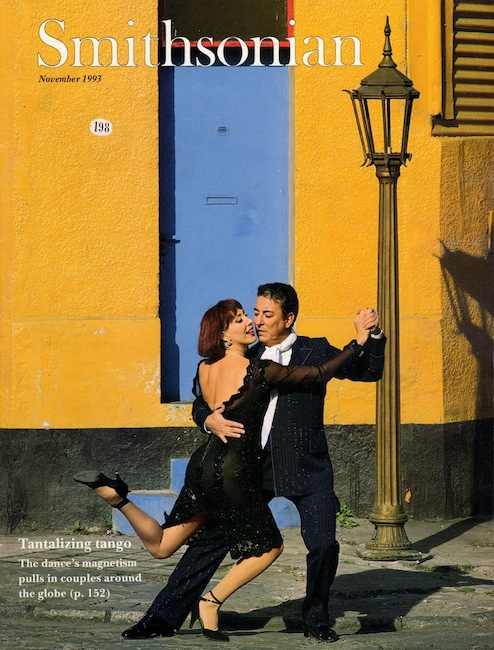

Inside
the Embrace, 2014 ArchiveInside
the Embrace, 2014 Archive
Inside
the Embrace, 2014 ArchiveInside
the Embrace, 2014 ArchiveEarly Buenos Aires Tango
6 July 2014 — Stephen Brown

During the 1997 Stanford Tango Week, Richard Powers (a Stanford Dance Historian) began the reconstruction and translation of "The true Argentine Tango, the one and only" as described by Nicanor Lima, Buenos Aires, circa 1914. Richard and his team worked on the project over the next two years and came close to finishing. Hoping to release a complete and finished product, Richard held onto the incomplete work for the next 15 years. Now, he is releasing the incomplete translation with the hopes that crowdsourcing will help finish the work.
Richard's reconstruction of the tango described in Lima's text shows that the current American and European forms of tango are fairly close to that described in Lima's 1914 manual, although some foreign elements may have entered European tango as the result of competitions. Given the strong similarities between the tango described in Lima's manual and the current forms of American and European tango, Richard concludes that Europeans didn't corrupt the tango (as many Argentines believe). Rather, tango continued to evolve in Argentina over the next 40 years as the Argentines changed their own dance. Richard's conclusion echos his previous research on Brazilian and other forms of samba. There have also been similar occurrences in language—where groups who lack constant contact with the country of their language's origin maintain an older form even as the language evolves in the country of its origin.
The nearly complete translation of Lima's manual and Richard's reconstruction of the dance can be
found on Richard's
website.
Peach Blossoms
4 May 2014 — Stephen Brown

For thirty years I searched for a master swordsman.
How many times did the leaves fall,
and the branches burst into bud?
But from the moment I saw the peach blossoms,
I've had no doubts.
Lingyun
Life Hasn't Been the Same

12 April 2014 — Stephen and Susan Brown
We first learned of the idea of dancing Argentine tango through an article in the November 1993 issue of Smithsonian magazine. The picture of Hector Mayoral and Elsa Marie in a tango pose on the street in front of an electric yellow building with a bright blue door in Buenos Aires caught our eyes. The article that accompanied the photo told about the resurgence of tango in Buenos Aires and its transplantation to the San Francisco Bay Area.
Through the article, we learned about Nora Dinzelbacher, an Argentine living
in the Bay Area and one of the leading tango teachers in the United States.
By March 1994, we were on our way from Dallas, where we lived at the time, to
San Francisco to learn tango from Nora. We visited San Francisco again in
May for more lessons with Nora. The summer of 1994, we went to our first
Stanford Tango Week. Life hasn't been the same since.